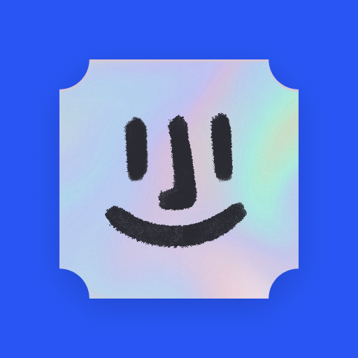
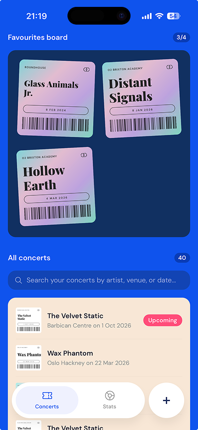

I Was There
By musicians and gig goers for musicians and gig goers.

The idea for I Was There came from a love of going to concerts and a nostalgia for keeping ticket stubs as memories.
We wanted a way to log our concerts and add our memories as we go.
We have big plans as we grow I Was There such as performer focused features, venue focused features, fun hidden experiences, and so much more.
This is just the start.
Please join us on this journey as we develop it. We want to hear from you, which is why we make it super easy to tell us what you want to see in the app. Big or small, share it with us.
About us
Clare is a musician.
Sandro is a designer.
Clare and Sandro are avid gig goers.
Clare and Sandro met working in the tech industry.
Clare and Sandro are friends. And really cool. Trust us.